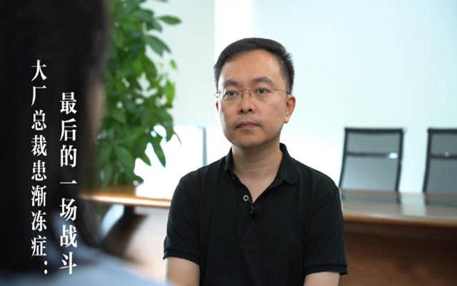

他曾就任于三星、安利中国、万科，他担任过京东原财务副总裁，他是爱思康医疗科技公司董事长，他推出了第一张电子发票。这样的人物本来应该是商业界的传奇。但他不止于此，因为他，蔡磊，有一个更为特殊的身份：渐冻症患者。
渐冻症是一种神经退行性疾病，它会逐渐剥夺患者的行动能力，使其身体逐渐瘫痪，甚至无法进行基本的日常活动，例如吃饭、洗澡、穿衣等。患者会肌肉萎缩甚至出现全身瘫痪；会呼吸困难，吞咽困难等问题，这些症状可能会对患者的健康造成直接威胁，甚至可能导致突发的呼吸衰竭和死亡；会逐渐丧失自主行动能力。总结一下，渐冻症的终点就是身体终于不听思维的指挥——死亡。

|
他不是霍金，但是他的韧性绝不会比霍金少一分一毫。2019年9月，蔡磊经过一系列检查，北医三院神经内科主任樊东升给出了最终的诊断结论——肌萎缩性侧索硬化症，也就是俗称的渐冻症。但是他没有投降。蔡磊和妻子开始了积极的行动。妻子作为医学博士，翻阅论文，查找渐冻症领域的最新研究。蔡磊则成立了渐冻症基金会，捐赠数亿资金用于渐冻症研究，并投入大量资金支持相关医疗领域的研究。他们寻找希望的同时，也为其他渐冻症患者带来了更多的希望。
从住院的时候，蔡磊就开始看关于ALS的中英文资料，翻译晦涩难懂的医学论文。一开始，他想自救，也想要救人。但是随着认识的深入，他意识到这些努力或许救不了自己的命，但必将为下一代病友的生命救治带来希望.确诊后，他逐步卸下了公司的大部分工作，却变得比过去还要忙，他希望用最短的时间，用互联网的方式，把资金、实验室、药企和医院都链接起来，尽最大可能缩短药物研发的时间。
“我有能力，也有资源，舍我其谁。”蔡磊奔走在投资人、科学家、药企之间，添加了上千位病友，说服他们记录自己的病情进展和用药情况，搭建了世界最大的渐冻症患者科研数据平台，链接了世界最大的患者群。
|
我不愿意评价这位勇士的结局——他自己也知道，命运很大可能不会向他再次抛出橄榄枝。但是他仍然不顾一切地向前走着，挫折，嘲讽，逐渐被囚禁的躯体，这些都困不住一个执着的灵魂。我只知道，如果他仅仅是一个成功的商人，我只会淡然地对着他的故事点点头；但是现在他成了“堂吉诃德”，成了50万病友中愿意为他人奋战的骑士，仅凭这一点，我愿意为他站起来深深地鞠一躬。